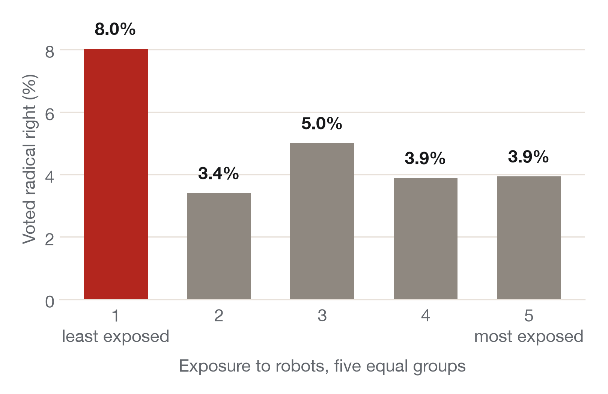
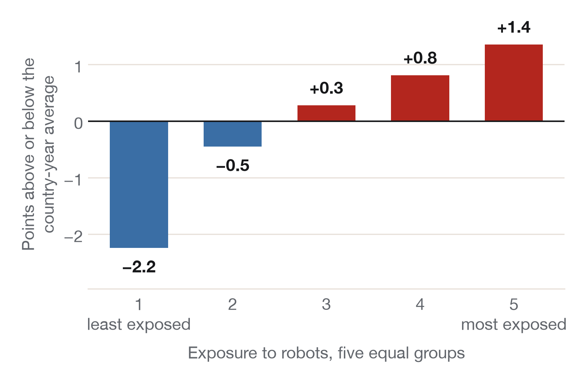
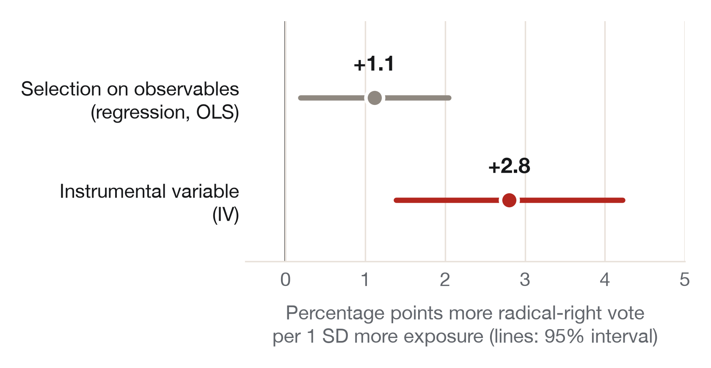

Week 8 · Section 7 · Lab
Research with agent skills: from the literature to your own analysis
Three parts. 1 · Skills and principles: what a skill is, and how to install and call one. 2 · Empirical research: one published paper, four steps, and at each step what the agent can do and what only you can decide. 3 · Lab: move your own project forward with an agent, then submit a 200-word reflection on Canvas, due before next section.
Folder names and wording below switch to match your tool.
Part 1 · Skills and principles
What is a skill?
A written procedure the agent follows: the instructions you'd give a careful research assistant, written once and followed the same way every time. It's a folder with a SKILL.md file, plus scripts if it needs them, in .claude/skills/.
A real one: Pedro Sant'Anna's lit-review
- Description, always loaded: the phrases that tell the agent to use it ("find papers on X").
- Allowed tools: what it may touch.
- Steps, read only when used: start from a named paper, search, sort into theory, empirics, methods and debates, find gaps and null results, write BibTeX, save a report.
- Verification: it checks its citations before it reports back.
Five principles
- The harness decides. Model + loop, tools, permissions, skills. Choose them on purpose.
- Write repeated work down as a skill. Optional: a clear prompt often does the job.
- Keep context short. Plan, instruct, verify, correct: "Before you start, tell me your plan in three steps. Wait for my OK."
- Delegate the procedural, keep the substantive. The most important one today; see below.
- Be transparent. Keep your chats. Every project submission needs an AI-use note.
4 · Delegate the procedural, keep the substantive
delegate, then check Searches, downloads, code, figures.
keep The question, the design, the assumptions, what the result means. Where the agent lacks what you know, it fills the gap with something plausible and made up.
Install a skill (optional, after class)
Open your project folder in the Claude app's Code tabCodex and give your agent the link to the skill's folder:
Install the lit-review skill from github.com/pedrohcgs/claude-code-my-workflow/tree/main/.claude/skills/lit-review into .claude/skills/ in this folder. Before you copy anything, show me its SKILL.md and tell me what it will do./reload-skills or start a new session in the same folder..agents/skills/; not listed? Restart Codex in the same folder.Read before you install: a skill can run scripts on your computer. Skills are optional and can go out of date as tools and models change: adapt one, or just write a clear prompt.
Skills from researchers
- Scott Cunningham (Baylor), MixtapeTools:
referee2audits finished empirical work in a fresh session;bibcheckchecks every reference against its DOI. - Pedro Sant'Anna (Emory), claude-code-my-workflow: about 60 skills, including
lit-review,data-analysisandreview-paper. Works in Codex too. - Simone Paci, With Great Powers: the skills behind his guide, including a literature-review protocol.
Call a skill
In plain words (its description matches), or name it:
I need literature on [your question]. Start from [a paper you know].
Use the lit-review skill on [your question].
The principles are adapted from Simone Paci, With Great Powers: A Practical Guide to Agentic AI for Social Science Research (2026).
Part 2 · Empirical research with an agent
The paper: Anelli, Colantone & Stanig (2021), "Individual vulnerability to industrial robot adoption increases support for the radical right", PNAS. European Social Survey, 13 western European countries, elections 1999–2015. Exposure to robots = how automatable your likely job is × how fast robots spread in your country. Nobody assigns robots at random, so it's observational.
| Step | agent can | only you can | A published skill |
|---|---|---|---|
| 1 · Literature | Start from one paper; map key papers into themes; find gaps and null results; write BibTeX. | Open the key papers: is each method and finding right? | Sant'Anna's lit-review |
| 2 · Data | Download the replication data and plot it, in seconds. | Spot that the first chart compares countries, not people. | Sant'Anna's data-analysis |
| 3 · Text as data | Label thousands of texts with your codebook; report agreement with your hand codes. | Define the categories; decide if agreement is good enough. | None needed |
| 4 · Analysis | Run the regression and the instrumental-variable version, with a table and a chart. | Judge each assumption: unmeasured differences, other paths from robots abroad. | Sant'Anna's data-analysis; Cunningham's referee2 to audit |
Step 2 · Data: the first chart compares countries, not people


Step 3 · Text as data: check it before you scale it
An agent can sort speeches, manifestos or survey answers into categories with your codebook. On 6,183 tweets and news articles, ChatGPT beat crowd workers by about 25 points in accuracy, at under $0.003 per label (Gilardi, Alizadeh & Kubli 2023, PNAS). Accuracy meant agreement with trained human coders, so:
- you Write a codebook, and hand-code a sample (say 100 texts).
- agent Label the same sample; report agreement, category by category.
- agent If you judge it good enough, label everything. Report the agreement.
Step 4 · Analysis: from a correlation to a causal claim

- Selection on observables (the regression): compares people in the same country, year and region. Assumes nothing important is left unmeasured.
- Instrumental variable: robot growth in the other countries. It must reach the vote only through robots here: you argue it.
- Other designs: difference-in-differences needs parallel trends; regression discontinuity needs a cutoff (none here).
Five designs, and what to ask your agent
| Design | It works if… | Ask your agent for |
|---|---|---|
| Randomized trial | Treatment was assigned at random | A balance table |
| Selection on observables | Nothing important is left unmeasured | What could still differ; a sensitivity check |
| Regression discontinuity | Units either side of a cutoff are comparable | Sorting at the cutoff; balance near it |
| Instrumental variable | The instrument reaches the outcome only through the treatment | The first stage; other paths |
| Difference-in-differences | Trends would have stayed parallel | The pre-treatment plot |
agent can Run each check.
only you can Decide whether the assumption is believable for your question, and which design to defend.
Not an empirical project? The same test works. Theoretical: the agent finds the literature on your mechanism and the strongest rival explanation; the mechanism is yours. Argumentative: it makes the strongest objection to your position; your position and standard are yours.
Part 3 · Lab: move your project forward with an agent
What you submit: a 200-word reflection on Canvas about what you try here, due before next section.
Questions about your project? Come by and ask your TA, about AI or anything else.
-
1Pick a next stepWhat will you hand over, what will you decide?
Pick one stage from the cards below. Write down what the agent does and what you decide yourself.
-
2Try it, then check itWith or without a skill
Ask for its plan first. When something matters, ask how it knows, then check one thing yourself.
Before you start, tell me your plan in three steps. Wait for my OK.
-
3Submit your reflectionAbout 200 words, on Canvas, due before next section
Note what you tried, what worked and what went wrong, then write the reflection. Keep the chat for your AI-use note.
Example prompts, with a skill where one fits
Skills are optional: without one, send the prompt without naming the skill.
Literature
Use the lit-review skill: find literature on [your question], starting from [a paper you know].
you Open every source you plan to cite.
Data
Find and download a public dataset for [your question]. Tell me the source, unit and years first. Then clean it and list every change you made.
you Check three numbers against the source.
Figure
Plot [y] by [x] from [my cleaned file], in a clean journal style. Before you draw it, tell me what each bar compares.
you Does it compare like with like?
Text coding
Here are my codebook and 100 texts I coded by hand. Label them, then compare with my labels, category by category. Don't change the codebook.
you Is the agreement good enough?
Analysis
Use the data-analysis skill on [my data file]: run [my model], with a table and a figure. Show me the code.
you Choose the design first; name the assumption you're least sure of.
Second opinion
In a fresh session: use the referee2 skill on my code, or list the three biggest threats to my main claim. Don't edit my files.
you Decide which threats are real.
Submit: a 200-word reflection on Canvas
Answer two questions about what you tried
- Delegate or decide? Which work could you hand to an AI agent, and which judgments must stay yours? Why?
- What happened? What did you try, what worked, what went wrong, and how did you check?
To pass: about 200 words · both questions, about something you actually tried on your project. Write it yourself.
0 words so far · aim for about 200
Saved in this browser as you type, so you can come back before the deadline. Nothing is sent anywhere.
- Press Download my reflection. You get a text file with your name and your reflection.
- On Canvas, open Section Assignment 7 and upload the file. (Or press Copy and paste it into the text box.)
Hints
The agent doesn't see the skill
.claude/skills/[skill-name]/SKILL.md, inside the folder you opened. Then run /reload-skills or start a new sessionchat.The agent forgets what we agreed
Words you'll need
No match. Ask your agent, a neighbour, or your TA.